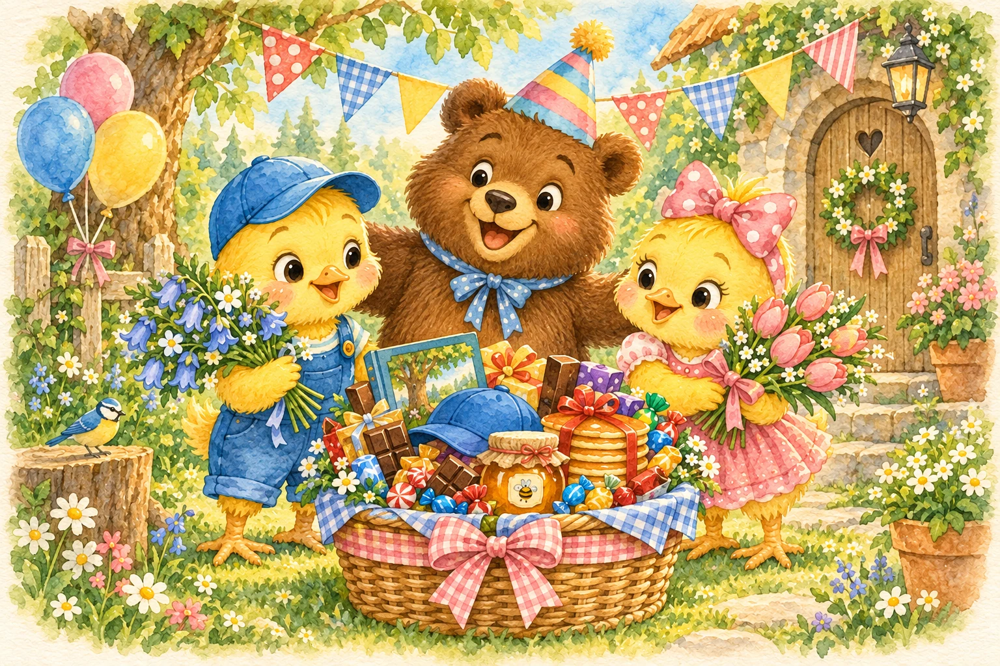

A LITTLE FOREST ADVENTURE
Bruno’s
Birthday Adventure
Bruno loves pancakes! Help Peep and Poppy find hidden flowers and birthday treasures along the forest trail.
Six treasures. Two lovely bouquets. One happy bear.
Level 1
Our treasures so far
Find 5 cardboard boxes beside rocks or on benches.
Use ← and → to walk. Press ✋ nearby to collect.
A birthday surprise is waiting!
Level 1Press ✋ near a box to collect flowers0 / 5 boxes
A surprise!
Walk to a cardboard box. There are flowers hiding inside!
Bluebells: 0Pink tulips: 0Gifts: 0 / 6

WE MADE IT TOGETHER
Happy birthday, Bruno!
“Pancakes! My favourite!” smiles Bruno.
Peep’s bluebell sprigs and Poppy’s pink tulips are now lovely bouquets. All six treasures are here for Bruno!